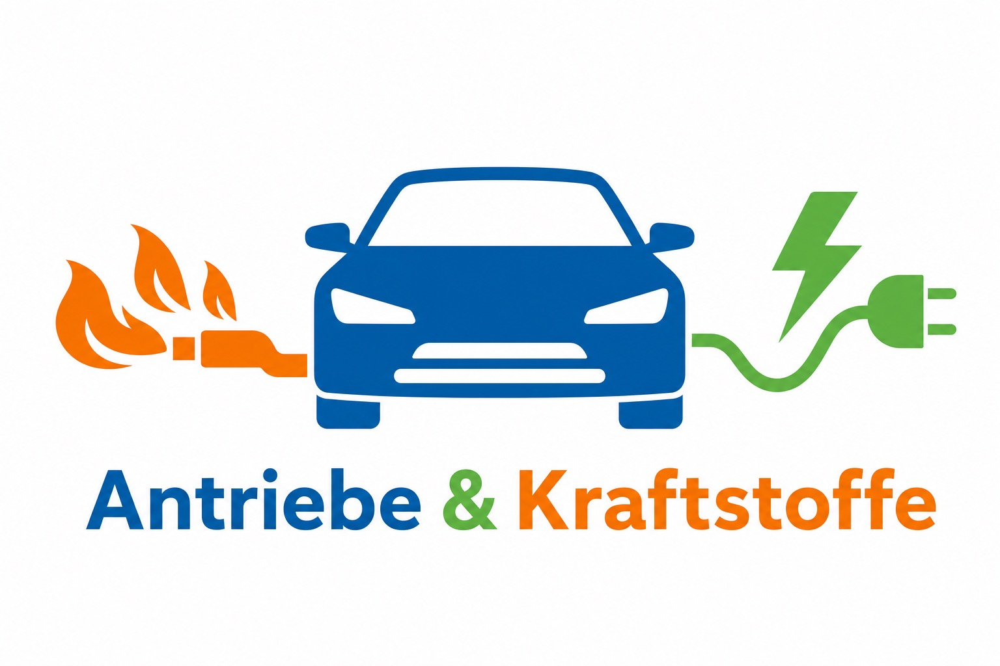

Unterrichtseinheit für Technik Klasse 8 (Sek I, BW) – Verbrennungsmotor und Elektroantrieb im Vergleich
Überblick
Eine komplette Doppelstunde mit allen nötigen Materialien – vom Einstieg bis zur Bewertungsaufgabe.
Detaillierter Stundenplan für eine Doppelstunde (ca. 90 min) mit Phasenbeschreibungen, Sozialformen und Materialangaben.
Verlaufsplan öffnenSchüler ordnen Energieketten für Fahrrad, Verbrennungsmotor und Elektroauto zu und erarbeiten Grundbegriffe.
Arbeitsblatt öffnenDrei differenzierte Stationen: Verbrennungsmotor mit Lehrerexperiment, Elektroantrieb und Kriterienvergleich (G/M/E-Niveau).
Arbeitsblatt öffnenVergleichstabelle und kurzer Leistungsnachweis mit Begründungsaufgabe (geeignet als Kurztest).
Arbeitsblatt öffnenVollständige Anleitung zur Isopropanol-Verbrennung im transparenten Kolbenmodell – mit Sicherheitshinweisen und Auswertungsleitfaden.
Anleitung öffnenAlle Aufgaben sind dreifach differenziert: G-Niveau (Lückentexte, Symbole), M-Niveau (vollständige Sätze), E-Niveau (Begründungen, Erweiterung).
Unterrichtsablauf
Fünf klar strukturierte Phasen – von der Aktivierung des Vorwissens bis zur individuellen Reflexion.
Kompetenzen & Didaktik
Orientiert am Bildungsplan 2016 Technik, Sek I BW.
G: Ein Antriebssystem beschreiben.
M: Beide Antriebe beschreiben.
E: Vor- und Nachteile darstellen und erläutern.
Informationen aus Texten und Schaubildern entnehmen, Energieketten darstellen, technische Systeme nach Kriterien vergleichen und strukturiert dokumentieren.
Antriebssysteme nach Wirkungsgrad, Umweltbelastung, Lärm und Reichweite bewerten und für konkrete Einsatzgebiete begründet empfehlen.
Vergleich
Übersicht der wichtigsten Kriterien – Grundlage für die Tabellenarbeit in AB 2 und AB 3.
| Kriterium | 🔥 Verbrennungsmotor | ⚡ Elektroantrieb |
|---|---|---|
| Energiequelle | Kraftstoff (Benzin, Diesel, Gas) | Elektrischer Strom (Akku / Ladestation) |
| Wirkungsgrad | – ca. 20–40 % | + ca. 80–90 % |
| Abgase im Betrieb | – CO₂, NOₓ, Feinstaub | + keine lokalen Emissionen |
| Lärm | – laut (Motor, Abgasanlage) | + sehr leise |
| Reichweite | + 500–800 km pro Tankfüllung | 0 200–500 km pro Ladung |
| Tank- / Ladezeit | + 3–5 Minuten tanken | – 20 Min.–mehrere Stunden laden |
| Wartungsaufwand | – hoch (Ölwechsel, Zahnriemen …) | + gering (weniger bewegliche Teile) |
| Infrastruktur | + flächendeckendes Tankstellennetz | 0 Ladenetz wächst |
Lehrerexperiment
Nur Demonstrationsversuch durch die Lehrkraft – kein Schülerexperiment!
Ausschließlich Lehrerversuch! Schülerinnen und Schüler bleiben auf ihren Plätzen. Schutzbrille tragen, Feuerlöscher bereithalten, Versuch in der Gefährdungsbeurteilung dokumentieren.
Hinweis: Nur 2–3 Tropfen Isopropanol – kein Flüssigkeitsspiegel. Transparenter Kunststoffzylinder (kein Metallrohr, kein Projektil). Durchführung idealerweise im Abzug oder hinter Plexiglas-Schutzscheibe.
Schüler erleben die explosionsartige Verbrennung eines Brennstoff-Luft-Gemischs und erkennen: Chemische Energie des Kraftstoffs wird über Gasexpansion in mechanische Arbeit am Kolben umgewandelt.
Transparenter Acrylzylinder (Ø 30–40 mm, L 20 cm), leichter Kolben mit O-Ring, Piezo-Zünder (Grillanzünder), Isopropanol in Tropfpipette, feuerfeste Unterlage, Plexiglas-Schutzscheibe, Schutzbrille.
Zylinder vorbereiten 2–3 Tropfen Isopropanol in den Zylinder geben, vorsichtig schwenken, überschüssige Flüssigkeit ablaufen lassen. Nur ein dünner Dampf-Film bleibt zurück.
Kolben einsetzen Kolben mit O-Ring von oben einführen, sodass er einige Zentimeter im Zylinder sitzt. Führungsstange zeigt nach außen.
Sicherheitsposition einnehmen Zylinder auf feuerfeste Unterlage stellen, Plexiglas-Schutzscheibe aufstellen. Klasse sitzt auf ihren Plätzen.
Zündung Piezo-Zünder auslösen → kurzer Knall („Puff"), der Kolben bewegt sich aus dem Zylinder heraus.
Nachbereitung Zylinder öffnen und auslüften lassen. Versuch nicht mehrfach direkt hintereinander wiederholen.
⚗️ Energiekette des Versuchs
Chemische Energie (Isopropanol) → Wärmeenergie (heiße Gase) → Bewegungsenergie (Kolben) → Bewegungsenergie der Räder (im echten Motor)
Differenzierung
Alle Aufgaben lassen sich auf drei Niveaustufen einsetzen.
Lückentexte, Bildfolgen (Viertakt), vorstrukturierte Energieketten, Bewertung mit Symbolen (+/–/0). Starke Unterstützung für Schüler mit Förderbedarf.
Eigene Sätze, vollständige Tabellen, einfache Vergleichsaussagen formulieren. Entspricht dem Regelstandard für Klasse 8.
Zusätzliche Aspekte (Hybrid, Brennstoffzelle), ausführliche Begründungen, Empfehlung für ein konkretes Einsatzgebiet mit mindestens zwei Kriterien.
Dateien
Alle Dateien liegen als Markdown-Dokumente vor und können direkt bearbeitet und ausgedruckt werden.
Tipp: Lege dir für die Klasse einen eigenen Ordner (z. B. in Nextcloud, OneDrive oder GitHub) an und packe alle Dateien plus ggf. Präsentationsfolien hinein. Du kannst die Arbeitsblätter leicht um eigene Bilder, GIFs oder eine weitere Stunde zu Hybrid- und Brennstoffzellenfahrzeugen ergänzen.